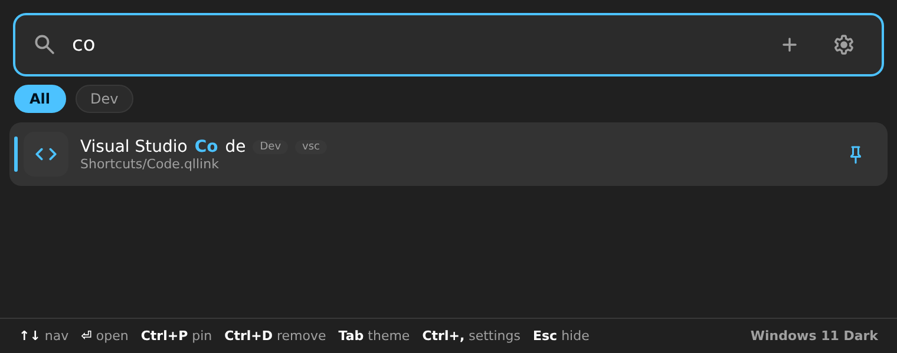

A fast, quiet keystroke launcher with a native Windows 11 feel. Drag-and-drop shortcuts, global hotkeys, fuzzy search, themes, a password lock, and a built-in calculator — all from one tidy folder.

Thoughtfully fast, keyboard-first, and gentle on the eyes.
Summon it from anywhere with Win + Ctrl + N. Every binding is rebindable with a click-to-record control.
Drop any file, folder or link onto the window and it’s saved as a shortcut instantly.
Everything lives in one folder. Shortcut a folder and its contents appear in search too.
Optional lock screen — set a password and the launcher re-arms every time it hides.
Type a few letters. Smart ranking floats your most-used apps to the top automatically.
Type 23*7+1 or sqrt(144) and copy the result. Web search built in.
Six soft themes and 4000+ Material icons. Set your own .png/.svg per shortcut.
Runs quietly as a background app, ready the instant you need it. No clutter.
Crisp fades, gentle pop-ins and a Windows-11 acrylic feel throughout.
Run pip install -r requirements.txt then python launcher.py — or double-click install.cmd.
Drag files onto the window, hit +, or drop them in the Shortcuts folder.
Press Win + Ctrl + N, type, and press Enter. It waits quietly in your system tray.